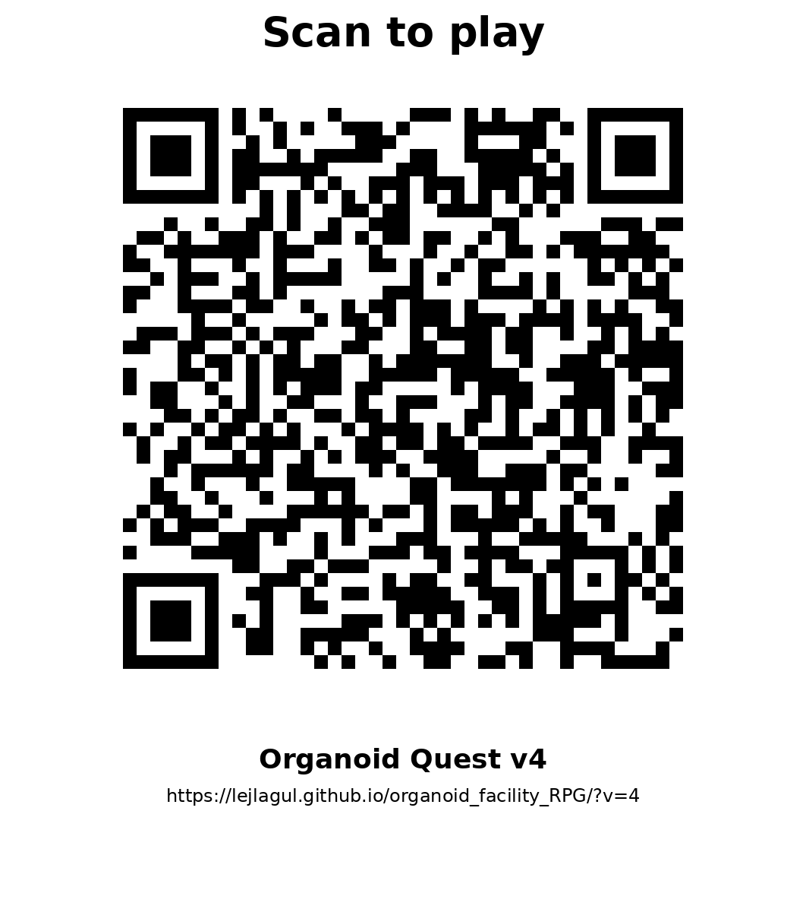

Can you build the right gut-on-chip model?
Play Organoid Quest: From Cells to Cure

Scan the QR code, explore the Organoid Facility, collect a clinical sample, choose a platform, and make a translational recommendation.
Imperial College Organoid Facility
https://lejlagul.github.io/organoid_facility_RPG/?v=4